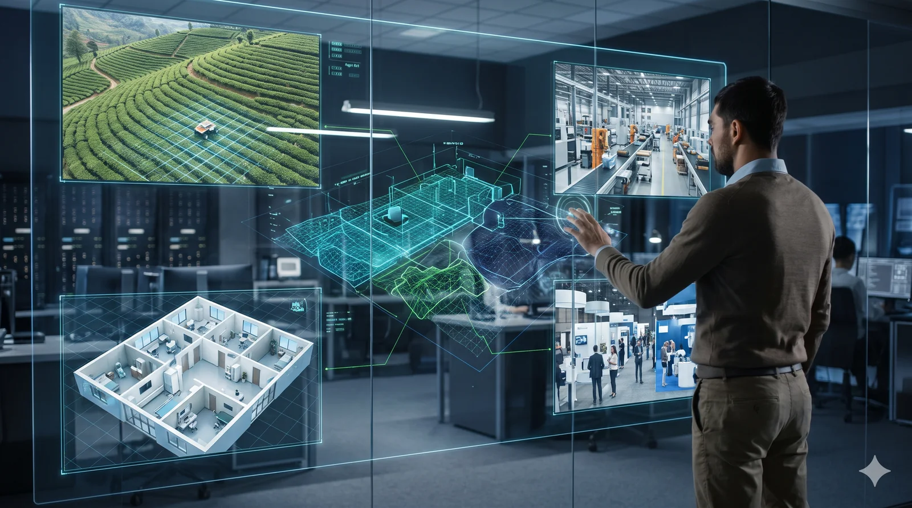
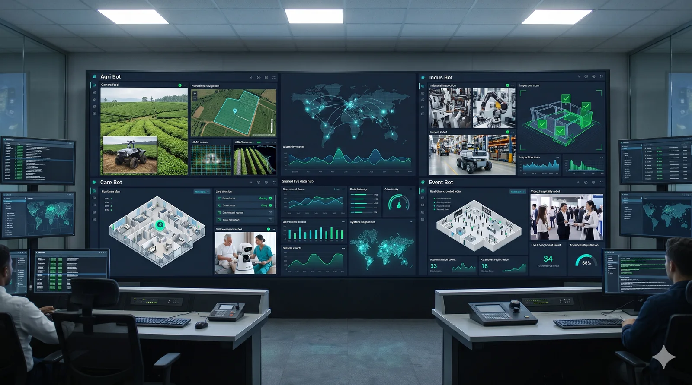

AI and computer vision
Shared building blocks help robots interpret visual information and respond to their tasks.
Nanvi Technology Solutions LLC is developing practical robotics for agriculture, disability assistance, industrial automation, and events and hospitality.
Our four-robot portfolio is connected by shared AI, vision, navigation, and monitoring capabilities—so each solution can focus on the needs of its environment.
Explore our robots
Agri Bot is designed for weed management in tea estates and plantations. Care Bot focuses on everyday assistance in care settings. Indus Bot supports inspection and production visibility, while Event Bot is designed to welcome and guide guests.
We focus on useful automation, clear human interaction, and solutions designed around the people who work with them.
A future where useful, responsible robotics makes everyday work safer and gives people more time to focus on what matters.
To design accessible, reliable robotics that solve real problems through thoughtful engineering, practical AI, and close collaboration.
NRIP is the common technology foundation behind the four Nanvi robots.

Shared building blocks help robots interpret visual information and respond to their tasks.
Reusable mobility and remote-control capabilities support robots in different environments.
Common dashboard components bring robot status and operational information together.
A shared modular platform helps Nanvi reuse core capabilities across products and tailor each robot to its industry.
We focus on challenges in agriculture, care, manufacturing, and events.
Robots are designed to support people, with clear limits on what they should and should not do.
We aim to develop solutions in collaboration with the people and organizations who will use them.
520 Central Parkway East, Suite 105
Plano, Texas 75074
United States
Chennai, Tamil Nadu
India